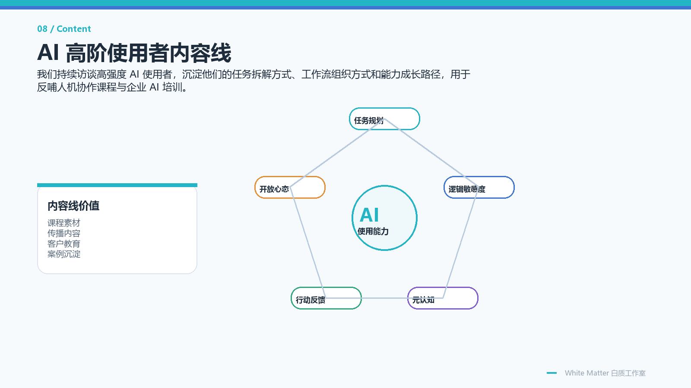

信息太多
能看到很多材料，却难以判断重点、关系和真正的问题位置。
Problem
能看到很多材料，却难以判断重点、关系和真正的问题位置。
脑中有理解，但一说出口就变成散点语言，无法形成可讨论结构。
把 AI 当搜索框或问答工具，却没有拆任务、验结果和沉淀流程。
上课能听懂，换到工作、写作、沟通和决策场景就断开。
训练目标
信息理解 · 结构化表达 · 逻辑判断 · 认知迁移 · AI 协作Assets
已有认知训练底座与 AI 人机协作课程结构，正在产品化升级。
长期私教、小班课、课后训练和结构化课记形成交付闭环。
把线性语言转成节点、关系、结构和场景，让思考过程可视化。
持续沉淀高阶 AI 使用者访谈、认知能力结构和课程研发素材。
Courses
从符号、逻辑、结构、对象、事件链到战略博弈，训练学习者把复杂问题拆成可分析、可推演、可迁移的结构。
私教路径以符号辨析、元素提取和辩证法三件套为核心；小班路径以真实期次、课后训练、作业讲评和阶段反馈持续维护。
复用 AI 人机协作六讲、认知能力训练任务和私教经验，面向青少年做 AI 使用、项目表达、PPT/报告和工作流分析训练。
Delivery
判断学习者的理解方式、表达方式和任务卡点。
建立 AI 时代的信息处理框架和结构化思考语言。
用项目任务、AI 对话和可视化建模巩固能力。
把关键学习过程整理成结构化课记，用于复盘和迭代。
输出能力变化、下一步训练建议和项目成果。
Evidence
项目材料显示，White Matter 已有长期私教、小班课程、课前评估、连续课记、optional 训练和阶段性输出讲评，不是停留在概念阶段。
从复杂文本局部理解，推进到主动追问关键问题和组织口头模型。
6 次样本 · 约 11 小时从创意强但执行链不足，进入工具选择、demo 任务和精确执行训练。
5 次样本 · 约 8 小时完成课前评估、连续主课、课后训练和多次输出讲评。
4 名评估 · 7 次主课Zhisi
织思面向学习、讨论和复杂问题拆解，把人的思考过程从线性文字转成节点、关系、结构和场景。
把复杂问题拆成对象、属性、关系和推演路径。
围绕人物、事件、项目和客户展开场域分析。
对多因素选择和判断做权重平衡。
把讨论记录、结构图和输出报告连接起来。


Content & Research
White Matter 持续访谈高强度 AI 使用者，沉淀任务拆解方式、工作流组织方式和能力成长路径，用于反哺人机协作课程与企业 AI 培训。
Collaboration
适合咨询 AI 认知课程、青少年 AI 训练营、企业人机协作培训、织思工具试用或定制化课程交付。